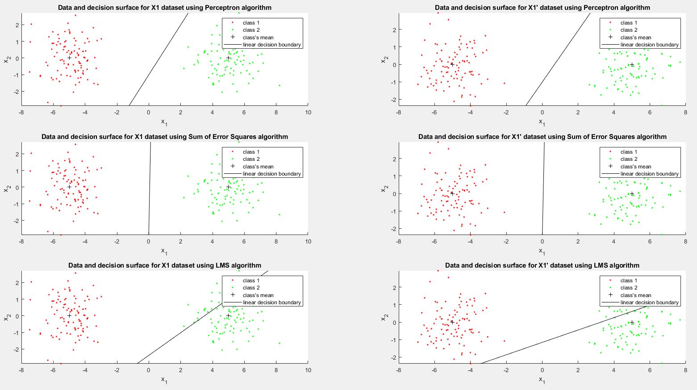
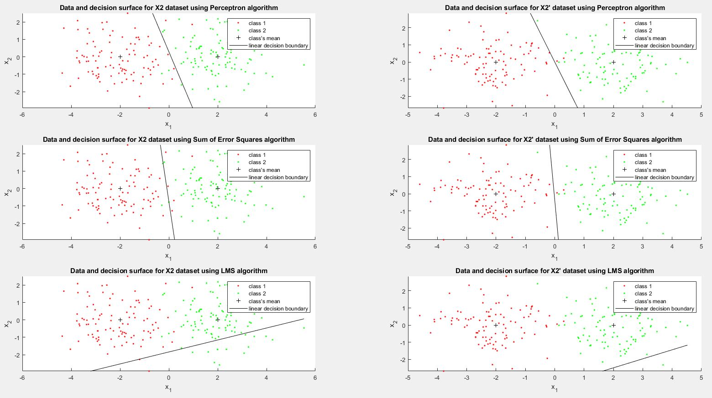

seed = 0
randn('seed',seed);
seed =
0
clear; close all;
% Prepare the variables:
N = 200;
m1 = [-5;0];
m2 = [5;0];
m = [m1 m2];
S1 = eye(2)*1;
S2 = S1;
S(:,:,1) = S1; S(:,:,2) = S2;
P = [1/2;1/2];
% Generate data set X1, X1_ and class assignments y1, y1_
[X1, y1] = generate_gauss_classes(m, S, P, N);
[X1_, y1_] = generate_gauss_classes(m, S, P, N);
% Add an additional coordinate and set it equal to 1
X1(:,3) = ones(size(X1,1),1);
X1_(:,3) = ones(size(X1_,1),1);
X1 = X1';
X1_ = X1_';
[c,~]=size(X1);
w0 = ones(c,1);
y_temp1 = y1;
y_temp1(y_temp1==2) = -1;
y_temp1_ = y1_;
y_temp1_(y_temp1_==2) = -1;
r_plt = 3;
c_plt = 2;
figure()
% Train the data with the Perceptron algorithm to create a classifier
w1_per = perceptron_train(X1,y_temp1,w0);
plot_data(X1, y1, m, w1_per, "Data and decision surface for X1 dataset using Perceptron algorithm", r_plt, c_plt, 1);
perf = calculate_performance(X1,y_temp1,w1_per);
sprintf("X1 Perceptron: %f", perf)
w1_per_ = perceptron_train(X1_,y_temp1_,w0);
plot_data(X1_, y1_, m, w1_per_, "Data and decision surface for X1' dataset using Perceptron algorithm", r_plt, c_plt, 2);
perf = calculate_performance(X1_,y_temp1_,w1_per_);
sprintf("X1' Perceptron: %f", perf)
% Train the data with the Sum of Error Squares algorithm to create a classifier
w1_ses = SSErr_train(X1,y_temp1);
plot_data(X1, y1, m, w1_ses, "Data and decision surface for X1 dataset using Sum of Error Squares algorithm", r_plt, c_plt, 3);
perf = calculate_performance(X1,y_temp1,w1_ses);
sprintf("X1 Sum of Error Squares: %f", perf)
w1_ses_ = SSErr_train(X1_,y_temp1_);
plot_data(X1_, y1_, m, w1_ses, "Data and decision surface for X1' dataset using Sum of Error Squares algorithm", r_plt, c_plt, 4);
perf = calculate_performance(X1_,y_temp1_,w1_ses_);
sprintf("X1' Sum of Error Squares: %f", perf)
% Train the data with the LMS algorithm to create a classifier
w1_lms = LMSalg_train(X1,y_temp1,w0);
plot_data(X1, y1, m, w1_lms, "Data and decision surface for X1 dataset using LMS algorithm", r_plt, c_plt, 5);
perf = calculate_performance(X1,y_temp1,w1_lms);
sprintf("X1 LMS: %f", perf)
w1_lms_ = LMSalg_train(X1_,y_temp1_,w0);
plot_data(X1_, y1_, m, w1_lms_, "Data and decision surface for X1' dataset using LMS algorithm", r_plt, c_plt, 6);
perf = calculate_performance(X1_,y_temp1_,w1_lms_);
sprintf("X1' LMS: %f", perf)
% Prepare the variables:
N = 200;
m1 = [-2;0];
m2 = [2;0];
m = [m1 m2];
S1 = eye(2)*1;
S2 = S1;
S(:,:,1) = S1; S(:,:,2) = S2;
P = [1/2;1/2];
% Generate data set X2, X2_ and class assignments y2, y2_
[X2, y2] = generate_gauss_classes(m, S, P, N);
[X2_, y2_] = generate_gauss_classes(m, S, P, N);
% Add an additional coordinate and set it equal to 1
X2(:,3) = ones(size(X2,1),1);
X2_(:,3) = ones(size(X2_,1),1);
X2 = X2';
X2_ = X2_';
[c,~]=size(X2);
w0 = ones(c,1);
y_temp2 = y2;
y_temp2(y_temp2==2) = -1;
y_temp2_ = y2_;
y_temp2_(y_temp2_==2) = -1;
r_plt = 3;
c_plt = 2;
figure()
% Train the data with the Perceptron algorithm to create a classifier
w2_per = perceptron_train(X2,y_temp2,w0);
plot_data(X2, y2, m, w2_per, "Data and decision surface for X2 dataset using Perceptron algorithm", r_plt, c_plt, 1);
perf = calculate_performance(X2,y_temp2,w2_per);
sprintf("X2 Perceptron: %f", perf)
w2_per_ = perceptron_train(X2_,y_temp2_,w0);
plot_data(X2_, y2_, m, w2_per_, "Data and decision surface for X2' dataset using Perceptron algorithm", r_plt, c_plt, 2);
perf = calculate_performance(X2_,y_temp2_,w2_per_);
sprintf("X2' Perceptron: %f", perf)
% Train the data with the Sum of Error Squares algorithm to create a classifier
w2_ses = SSErr_train(X2,y_temp2);
plot_data(X2, y2, m, w2_ses, "Data and decision surface for X2 dataset using Sum of Error Squares algorithm", r_plt, c_plt, 3);
perf = calculate_performance(X2,y_temp2,w2_ses);
sprintf("X2 Sum of Error Squares: %f", perf)
w2_ses_ = SSErr_train(X2_,y_temp2_);
plot_data(X2_, y2_, m, w2_ses_, "Data and decision surface for X2' dataset using Sum of Error Squares algorithm", r_plt, c_plt, 4);
perf = calculate_performance(X2_,y_temp2_,w2_ses_);
sprintf("X2' Sum of Error Squares: %f", perf)
% Train the data with the LMS algorithm to create a classifier
w2_lms = LMSalg_train(X2,y_temp2,w0);
plot_data(X2, y2, m, w2_lms, "Data and decision surface for X2 dataset using LMS algorithm", r_plt, c_plt, 5);
perf = calculate_performance(X2,y_temp2,w2_lms);
sprintf("X2 LMS: %f", perf)
w2_lms_ = LMSalg_train(X2_,y_temp2_,w0);
plot_data(X2_, y2_, m, w2_lms_, "Data and decision surface for X2' dataset using LMS algorithm", r_plt, c_plt, 6);
perf = calculate_performance(X2_,y_temp2_,w2_lms_);
sprintf("X2' LMS: %f", perf)
function P = calculate_performance(X,y,w)
P = sum(w'*X.*y < 0);
end
function [X,y] = generate_gauss_classes(m,S,P,N)
[~,c]=size(m);
X=[];
y=[];
for j=1:c
% Generating the [p(j)*N)] vectors from each distribution
t=mvnrnd(m(:,j),S(:,:,j),fix(P(j)*N));
% The total number of points may be slightly less than N
% due to the fix operator
X=[X; t];
y=[y ones(1,fix(P(j)*N))*j];
end
end
function plot_data(X,y,m,w,TLE,r_plt,c_plt,iplot)
[l,c]=size(m); % c=no. of classes
if(l ~= 2)
fprintf('NO PLOT CAN BE GENERATED\n')
return
else
pale=['r.'; 'g.'; 'b.'; 'y.'; 'm.'; 'c.'];
subplot(r_plt,c_plt,iplot);
% Plot of the data vectors
hold on
X1 = X(1,:);
X2 = X(2,:);
for j=1:c
scatter(X1(y == j),X2(y == j),pale(j,:))
end
scatter(m(1,:),m(2,:),'k+')
end
decision_x = linspace(min(X1), max(X1));
decision_y = -(w(1)/w(2))*decision_x - (w(3)/w(2));
plot(decision_x, decision_y, "k");
hold off
title(TLE)
xlabel("x_{1}")
ylabel("x_{2}")
ylim([min(X2) max(X2)])
legend("class 1", "class 2", "class's mean", "linear decision boundary")
end
function w = perceptron_train(X,y,w_ini)
[l,N]=size(X);
max_iter=10000; % Maximum allowable number of iterations
rho=0.05; % Learning rate
w=w_ini; % Initialization of the parameter vector
iter=0; % Iteration counter
mis_clas=N; % Number of misclassified vectors
while (mis_clas>0) && (iter<max_iter)
iter=iter+1;
mis_clas=0;
gradi=zeros(l,1);% Computation of the "gradient"
% term
for i=1:N
if((X(:,i)'*w)*y(i)<0)
mis_clas=mis_clas+1;
gradi=gradi+rho*(-y(i)*X(:,i));
end
end
w=w-rho*gradi; % Updating the parameter vector
end
end
function w = SSErr_train(X,y)
w = inv(X*X')*(X*y');
end
function w = LMSalg_train(X,y,w_ini)
[~,N]=size(X);
rho=0.1; % Learning rate initialization
w=w_ini; % Initialization of the parameter vector
for i=1:N
w = w + (rho/i)*(y(i)-X(:,i)'*w)*X(:,i);
end
end
The miss classifications due to different algorithms on different data sets are:
"X1 Perceptron: 0.000000"
"X1' Perceptron: 0.000000"
"X1 Sum of Error Squares: 0.000000"
"X1' Sum of Error Squares: 0.000000"
"X1 LMS: 24.000000"
"X1' LMS: 26.000000"
"X2 Perceptron: 5.000000"
"X2' Perceptron: 2.000000"
"X2 Sum of Error Squares: 8.000000"
"X2' Sum of Error Squares: 3.000000"
"X2 LMS: 88.000000"
"X2' LMS: 99.000000"
 
With , there are two remarks:
From the results of the experiment 1 (CX 3.1) ( and ), it is observed that the Perceptron and the Sum of Error Squares algorithm both achieve good accuracy due to the data being partitioned far apart. However, the LMS algorithm did not achieve good results.
In experiment 2 (CX 3.2), and , which makes the data points of both classes overlaps -- there is no clear boundaries separating the two classes. It is apparent that the performance of all 3 algorithms reduces. The Perceptron algorithm seems to achieve a little bit better result than the Sum of Error Squares algorithm. The LMS algorithm, again, did not achieve good results.
Changing the vector does not affect the Perceptron algorithm by a large margin. The Sum of Error Squares algorithm does not depend on . However, the LMS algorithm can achieve better result for better values of . Also, LMS algorithm depends largely on the step-size, which is supposed to change rather steep. A better configuration of the step-size variable can have considerable impact to the performance of this algorithm
From the remarks above, it is possible to conclude that for the data set generated, the Perceptron and the Sum of Error Square algorithms generate good classifiers, while the LMS algorithm needs a lot more tunning to achieve the same results. For example, if w0 is [0.5025; -0.4898; 0.0119]:
"X1 LMS: 0.000000"
"X1' LMS: 0.000000"
"X2 LMS: 18.000000"
"X2' LMS: 30.000000"
Or with w0 = [0.2321; -0.0534; -0.2967]:
"X1 LMS: 0.000000"
"X1' LMS: 0.000000"
"X2 LMS: 6.000000"
"X2' LMS: 4.000000"
Explain why the perceptron cost function is a continuous piecewise linear function.
To understand why the perceptron cost function (PCF) is a continuous and piecewise linear function, we need to revise the Perceptron Algorithm:
Assume that the algorithm works and coverges to a solution (a.k.a after step (**)), then, naturally, after each iteration of the outer loop (*), the number of elements in set will ideally reduce. Hence, while the the number of elements in set stay the same, is a linear function. However, when number of elements in set changes, is undefined and therefore, discontinuous. Hence, the perceptron cost function is a continuous piecewise linear function.